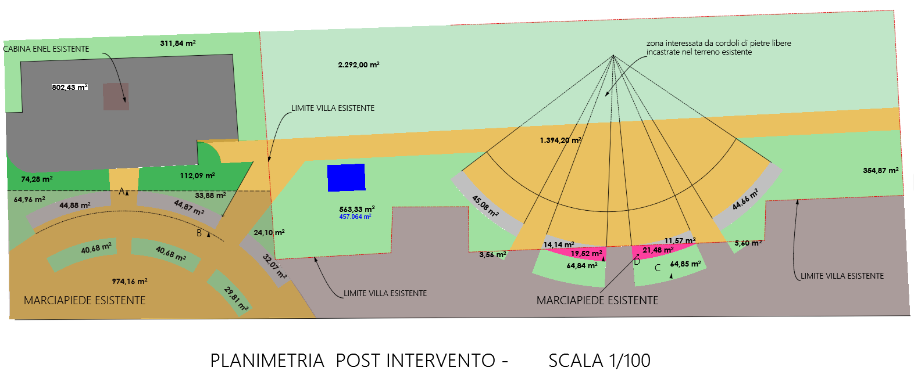

Conclusioni dopo l’ultimo incontro con la P.A.
A seguito dell’incontro avvenuto il 09 Aprile 2024 è stata comunicata al Comitato la tavola dettagliata delle superfici per tipologia relativa al propgettoe della Villa Comunale.
Il documento in formato pdf è scaricabile qui
La riproponiamo qui di seguito come imagine di più semplice consultazione e ne facciamo subito l’analisi;
Intanto, il calcolo da dove emerge la diminuzione è dettagliato nel riquadro centrale ed è circostanziato solamente all’area recintata della villa Comunale prima dell’ inizio dei lavori.
Nel calcolo sono state individuate, rappresentate e conteggiate solamente le superfici effettivamente realizzate in cemento presente prima dei lavori e quelle di nuova costruzione al termine dei lavori.
Sono state escluse da questo calcolo le superfici cosiddette drenante come Grevelit o simili. Evidentemente questa proprietà è sufficiente, dalla prospettiva della Pubblica Amministrazione, per equipararla al terreno naturale o vegetale e non considerarla alla pari delle superfici cementate riguardo l’impatto risultante sul biotopo.
In quale modo questi 1.395 mq di pavimentazione drenante possono contribuire alla salute o alla resilienza dell’ecosistema dove sono inseriti ? la risposta si presenta da se per coloro che hanno letto le varie linee guide esposte in questa sede:
a nulla anzi, potrebbero procurare piu impedimenti di vario genere che benefici.
Comunque per porre un punto finale a questa discussione dispersiva sono state estratte le planimetrie inserite nella tavola precedente, messe in scala e da queste sono state contabilizzate le diverse aree.
Nella rappresentazione seguente:

sono state contabilizzate le aree verdi indicate sul rilievo dello stato di fatto, dal conteggio sono state escluse le aree cementate corrispondente alle:
- sedute a semi cerchio costruite anni addietro e
- recinzione lato mare
per un totale di circa 177 m². Esclusi anche la superficie del vialetto, l’area della vasca, l’area del fabbricato che ospitava i bagni pubblici, la fontanella, …
Totalizziamo una superficie erbacea di partenza pari a 4.083 m² al quale leviamo anche i 83 m² per i cordoli o altri manufatti eventualmente non evidenziati ed otteniamo così un numero tondo di 4.000 m².
In quest’altra planimetria, sono individuate le superfici delle varie aree indicate sulla tavola aggiornata ad opere compiute:

identifichiamo:
- la fascia di verde lungo la ferrovia di 2.292,00 m²
- l’area a ridosso del “Desire” ribassato a 457.00 m² una volta sottratta la vasca
- l’area di 354.87 m² a ridosso del Manhattan
- e l’area complessiva di 138.72 m² delle nuove aiuole
alla fine totalizziamo 3.243 m² di verde al termine dei lavori circoscritti all’area del’antico tracciato delimitato dalla recinzione della Villa Comunale.
Siamo quindi passati da 4.000 a 3.240 m² per il verde urbano,questo risultato puo essere considerato un bilancio positivo ?
Contabilizziamo adesso anche le altre aree verdi ricomprese tra la recinzione laterale sud della Villa Comunale ed i confini della capitaneria militare e del Lido. Per avere una sembianza di coerenza con i valori precedenti è stata ridimensionata una foto satellitare dell’area in questione sul perimetro corrispondente definito nella Fig.02;
Da lì sono state ricalcate e misurate le aree vegetali. Sono state comunque sottratte le aree che accolgono le strutture temporanee per “onesta intellettuale”.
Sommando le aree ricavate ci aggiriamo intorno ai 1.200,00 m².
Di progetto al termine dei lavori sono previsti 732,32 m²
il bilancio rimane purtroppo sempre matematicamente negativo:
da 5.200,00 (4.000,00 + 1.200,00) a 3.945,00 (3.243,00 + 732,00)
Abbiamo una riduzione effettiva circa del 25% di aree verde urbano, molto inferiore al 42 % prospettato nell’evento del mese di marzo per via della documentazione messa a disposizione, ma pur sempre rappresenta una riduzione notevole.
Si rimarca inoltre che “Linee guida per la gestione del verde urbano e prime indicazioni per una pianificazione sostenibile” prescrivono di massimizzare l’accorpamento per evitare l’eccessiva frammentazioni e collocazione residuali del verde pubblico (p.19, secondo paragrafo), da evitare quindi le aiuole isolate così come proposte. Sicuramente è meglio averle
| tipo di superfice | ||||||||||
|---|---|---|---|---|---|---|---|---|---|---|
| superficie naturale | 5.743 | 3.300 | ||||||||
| superficie non permeabili | 3.388 | 5.453 | ||||||||
| superficie permeabili | 00 | 275 |
In conclusione, dopo questo ulteriore chiarimento fornito dall’amministrazione l’intervento ha comunque contribuito alla riduzione delle verde pubblico nei pressi della Villa Comunale. Il comitato ritiene che per questo semplice fatto non si aderisce alle prescrizioni sancite dal DNSH. Affermare che invece sono state rispettate le suddette norme perché sono state ridotte le superficie cementate risulta puramente strumentale.Si dovrebbe riconoscere la problematica e porvi rimedio.
Al comitato non interessa bloccare i lavori e avere un ennesima opera incompiuta aggiuntiva nel panorama Sidernese. Al comitato non interessa prevalere sull’amministrazione o soddisfare qualsiasi tipo d’orgoglio o d’egocentrismo in occasione dei vari confronti di competenza .
Al comitato interessa che vengano riconosciute le criticità, Al comitato interessa che si adoperino i rimedi piu opportuni per mitigare le conseguenze negative più dannose. Al comitato interessa che per tutti gli interventi futuri, fossero coinvolte persone che abbiano a cuore le ricadute ambientale, sociali e societali a lungo termine, perchè sono questi valori, fondamenti della società civile che oggi conosciamo, ad essere messi a repentaglio, sono d’un importanza ben superiori agli utili e fatturati per definire strategie resilienti sul lungo termine.
Se tutti gli sforzi indirizzati a evidenziare, da una parte, gli errori commessi e dall’altra a giustificarli, fossero stati combinati in questa sede nella fase progettuali, ne avremmo sicuramente tratto maggiore beneficio. Avremmo raggiunti risultati migliori sul territorio, e, a livello sociale o comunitario, ne sarebbe scaturito un sentimento di appagamento prezioso; avere collaborato al ripristino di una pietra angolare della Comunità, un sentimento di appartenenza da tramandare che nessun finanziamento puo comprare.
Per smorzare qualsiasi amarezza il comitato riconosce comunque che alcune modifiche apportate hanno limitato i danni potenziali:
- la platea dell’anfiteatro non verrà estesa fino ai piedi delle radici degli alberi monumentali
- l’impatto visivo delle tribune sarà decisamente mitigato con i declivi erbosi.
Sicuramente non mancheranno di sollevare altri questioni di fondo, ma per ora possono lasciamole che costituiscono come una specie di monito a non ricadere nelle stesse dinamiche dove tante risorse vengono assorbite con risultati e soddisfazioni decisamente limitate quando orizzonti molti più radiosi sarebbero altrimenti raggiungibili.